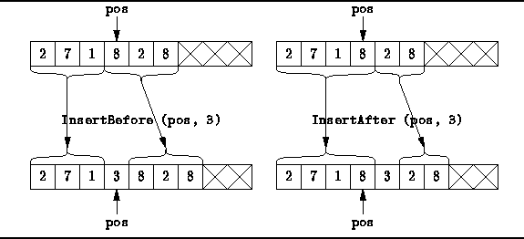
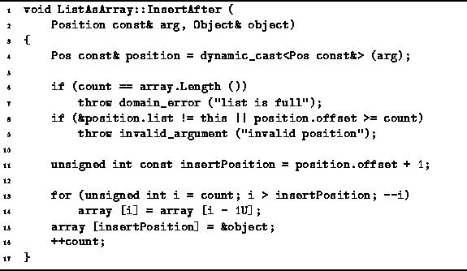
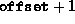

Data Structures and Algorithms
with Object-Oriented Design Patterns in C++
Data Structures and Algorithms
with Object-Oriented Design Patterns in C++
Two member functions for inserting an item at an arbitrary
position in an ordered list are declared in Program  --InsertBefore and InsertAfter.
Both of these take two arguments:
a const reference to a Position
and a reference to an Object.
The effects of these two functions are illustrated in Figure .
--InsertBefore and InsertAfter.
Both of these take two arguments:
a const reference to a Position
and a reference to an Object.
The effects of these two functions are illustrated in Figure .

Figure: Inserting an Item in an Ordered List Implemented as an Array
Figure shows that in both cases
a number of items to the right of the insertion point
need to be moved over
to make room for the item that is being inserted into the ordered list.
In the case of InsertBefore,
items to the right including the item at the point of insertion
are moved;
for InsertAfter,
only items to the right of the point of insertion are moved,
and the new item is inserted in the array location
following the insertion point.
Program gives the implementation of the
InsertAfter member function for the ListAsArray class.
The code for the InsertBefore function is identical
except for one line as explained below.

Program: ListAsArray Class InsertAfter Member Function Definition
The InsertAfter function takes two arguments--a const reference to a Position and a reference to an Object. As was done in the FindPosition function, the first argument is dynamically cast to an ListAsArray::Pos. Next, some simple tests are done to ensure that the position is valid, and that there is room left in the array to do the insertion.
On line 11 the array index where the new item will
ultimately be stored is computed.
For InsertAfter the index is 
as shown in Program .
In the case of InsertBefore,
the value required is simply offset.
The loop on lines 13-14 moves items over
and then a pointer object is saved on line 15.
If we assume that no exceptions are thrown,
the running time of InsertAfter
is dominated by the loop which moves list items.
In the worst case, all the items in the array need to be moved.
Thus, the running time of both the InsertAfter
and InsertBefore functions is O(n),
where  .
.
 Copyright © 1997 by Bruno R. Preiss, P.Eng. All rights reserved.
Copyright © 1997 by Bruno R. Preiss, P.Eng. All rights reserved.